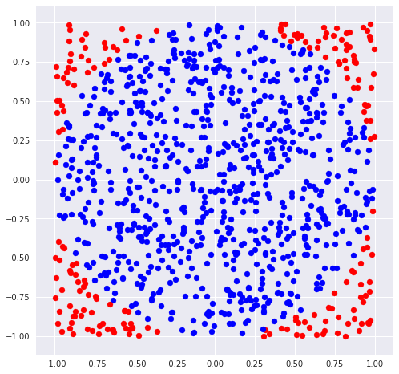
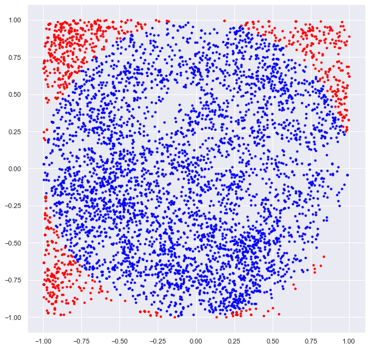

Introduction to Montecarlo Method
In this notebook, we will calculate value of pi by implementation of Monte Carlo Simulation
import random import matplotlib.pyplot as plt import numpy as np import pylab import seaborn as sns sns.set() %matplotlib inline
Lets calculate the value of PI directly:
In this method we randomly generate the points and calculate the ratio for value of PI.
n_trials = 10000 n_hits = 0 plt.figure(figsize = [10,10]) for iter in range(n_trials): x = random.uniform(-1.0, 1.0) y = random.uniform(-1.0, 1.0) if x**2 + y**2 < 1.0: plt.scatter(x,y,color = "blue",marker='.') n_hits += 1 else: plt.scatter(x,y,color = "red",marker ='.') print(4.0 * n_hits / float(n_trials))
3.174

- Lets construct the function to run above code multiple time
def direct_pi(N): n_hits = 0 for i in range(N): x = random.uniform(-1.0, 1.0) y = random.uniform(-1.0, 1.0) if x ** 2 + y ** 2 < 1.0: n_hits += 1 computed_pi = 4.0*n_hits / float(n_trials) return computed_pi
n_runs = 100 n_trials = 1000 plt.figure(figsize = [12,3]) for run in range(n_runs): pi = direct_pi(n_trials) plt.scatter(run,pi) plt.ylim([0,4.0]) plt.xlabel("No of Run") plt.ylabel("Value of Pi") plt.show()

Marcob chain Calculation of PI:
In this method we perform a random walk and accept or reject the move.
x, y = 1.0, 1.0 delta = 0.1 n_trials = 5000 n_hits = 0 plt.figure(figsize = [10,10]) for i in range(n_trials): del_x = random.uniform(-delta, delta) del_y = random.uniform(-delta, delta) '''to make sure they are inside square''' if (abs(x + del_x) < 1.0 and abs(y + del_y) < 1.0): x = x + del_x y = y + del_y '''to make sure they are inside circle''' if x**2 + y**2 < 1.0: n_hits += 1 plt.scatter(x,y,color = "blue", marker='.') else: plt.scatter(x,y,color = "red", marker='.') print(4.0 * n_hits / float(n_trials))
3.2256

- Lets construct the function to run above code multiple time.
def markov_pi(N, delta): x, y = 1.0, 1.0 n_hits = 0 for i in range(N): del_x, del_y = random.uniform(-delta, delta),\ random.uniform(-delta, delta) if abs(x + del_x) < 1.0 and abs(y + del_y) < 1.0: x, y = x + del_x, y + del_y if x**2 + y**2 < 1.0: n_hits += 1 computed_pi = 4.0 * n_hits / float(n_trials) return computed_pi
n_runs = 100 n_trials = 10000 delta = 0.1 plt.figure(figsize = [12,3]) for run in range(n_runs): pi = markov_pi(n_trials, delta) plt.scatter(run,pi) plt.ylim([0,4.0]) plt.xlabel("No of Run") plt.ylabel("Value of Pi") plt.show()